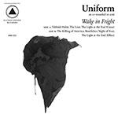

Music Reviews
-
Allison Crutchfield Tourist in This Town
On her solo debut, Allison Crutchfield alternates between escape and confrontation over a failed relationship. But the heavy material is buoyed by an excellent upbeat mix of synths and guitars.
Joe Marvilli gets his travel guide... -

Mark Eitzel Hey Mr Ferryman
The former American Music Club's 10th offering is one of his most musically robust, where he expands on his quieter nature with sweeping widescreen ballads.
Juan Edgardo Rodríguez reviews... -

Loyle Carner Yesterday's Gone
A world away from the aggressive swagger of showbiz rap and the gimmicky stereotypes too often found within it, Loyle Carner cuts a quirkily peculiar figure in today’s rap paradigm. It's hugely refreshing.
Carl Purvis reviews... -

Uniform Wake in Fright
Uniform’s Wake in Fright is not a happy album.
Sean Caldwell reviews... -

Japandroids Near to the Wild Heart of Life
On their third full-length effort, Near to the Wild Heart of Life, the Vancouver duo want to pursue their own greatness with anthems that continue to embrace the importance of keeping rock alive.
Juan Edgardo Rodríguez reviews... -

Julie Byrne Not Even Happiness
The singer-songwriter's latest, the decidedly naturalistic Not Even Happiness, centers on the intimate, everyday thoughts that emerge from being on the road.
Juan Edgardo Rodríguez reviews... -

The xx I See You
I See You is a sprawling album. The English band has embraced the spectacle, yet it is not the antithesis of their previous minimalist work.
Ellis Victoria reviews... -

The Men Devil Music
The Men simply want to kick out the jams. But in doing so, does it also limit their already proven songwriting abilities?
Juan Edgardo Rodríguez reviews... -
Metallica Hardwired...To Self-Destruct
Hardwired...to Self-Destruct is an exercise in excess. It's Metallica throwing everything from their career into a blender and seeing what comes out. More often not, this leads to pummeling shredfests. If you can get through the misfires, you'll find a bunch of songs that will get you headbanging in no time.
Joe Marvilli gets hardwired... -

Martha Wainwright Goodnight City
After some electropop misfires on 2013’s Come Home to Mama, Goodnight City is less a clean slate and more an affirmation and culmination of Wainwright’s talent over the decade.
Ellis Victoria reviews...